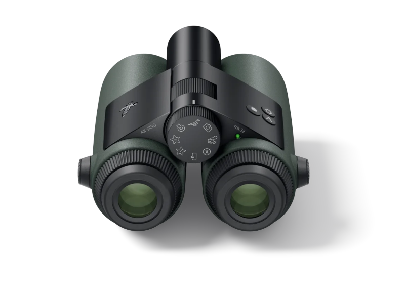
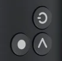

AX Visio
The AX Visio is a new AI supported binocular by Swarovski Optik. For the product details see the page Binoculars > AX Visio > AX Visio.

Technical Details
This introduction only describes the AX Visio relevant details for using OpenAPI. For additional guidance see the User Manual of the AX Visio on the page AX Visio > Downlaods.
Mode Selection Wheel
The mode selection wheel, or just selection wheel, is in the center of the binocular. It controls which application is currently active. There are eight different symbols on the selection wheel. For example a symbol for the camera application or a symbol for the Merlin Bird Id application.
The OpenAPI functionality and app has the following symbol:
To activate an application you have to rotate the selection wheel until the symbol is at the top of the binocular.
Buttons
The AX Visio has three buttons.

There named as following:
- release button (big dot icon): bottom left on the image
- arrow button (arrow icon): bottom right on the image
- power button (power icon): upper right on the image
Additionally the release button has two different press states, half pressed and fully pressed. The power button is also special. It can only be used to power on or off the device or turn on and off the display. It does not control the functionalities inside the apps.
To control the apps you only use the release and the arrow button.
Inside vs Outside Applications
In the context of the AX Visio you have to distinguish between two different kind of applications or apps.
There are applications that run on the binocular itself. E.g. the Camera Application or the Merlin Bird Id application. These can be started or activated by rotating the mode selection wheel. These apps are called Inside applications.
And there are applications that run on your personal smartphone and connect to the AX Visio. E.g. the Swarovski Optik Outdoor App or an third party Application that uses the OpenAPI to connect to the binocular. These apps are called Outside applications.
Display Screen
The AX Visio contains a semi transparent display in the right eyepiece. So you see the real world and additional the UI elements of currently active application.
The display is a monochrome display and the display color is red. So it can only draw red pixels with different opacities.
Camera
The camera of the AX Visio is located between the two eyepieces. When it takes an image, it does not capture exactly the same view as the human observer. The camera has it's on optical path. Nevertheless the optical camera setup tries mimic the optical properties of the human eyepieces.